Problem C
The Stern-Brocot Number System
Input: standard input
Output: standard output
The Stern-Brocot tree is a beautiful way for constructing the set of all nonnegative fractions m / n where m and n are relatively prime. The idea is to start with two fractions 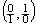 and then repeat the following operations as many times as desired:
Insert 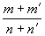 between two adjacent fractions 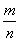 and 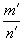.
For example, the first step gives us one new entry between and 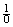,
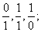
and the next gives two more:
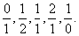
The next gives four more,
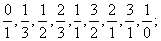
and then we will get 8, 16, and so on. The entire array can be regarded as an infinite binary tree structure whose top levels look like this:
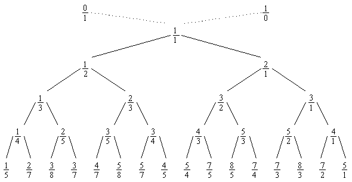
The construction preserves order, and we couldn't possibly get the same fraction in two different places.
We can, in fact,
regard the Stern-Brocot tree as a number system for representing rational
numbers, because each positive, reduced fraction occurs exactly once. Let's use
the letters L and R to stand for going down to the left or
right branch as we proceed from the root of the tree to a particular fraction;
then a string of L's and R's uniquely identifies a place in the
tree. For example, LRRL means that we
go left from 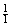 down to 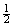, then right to 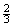, then right to 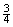, then left to 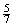. We can consider LRRL
to be a representation of  . Every positive fraction gets represented in this way as a
unique string of L's and R's.
. Every positive fraction gets represented in this way as a
unique string of L's and R's.
Well, actually
there's a slight problem: The fraction  corresponds to the empty string, and we need a notation for
that. Let's agree to call it I,
because that looks something like 1 and it stands for "identity".
corresponds to the empty string, and we need a notation for
that. Let's agree to call it I,
because that looks something like 1 and it stands for "identity".
In this problem, given a positive rational fraction, you are expected to represent it in Stern-Brocot number system.
Input
The input file contains multiple test cases. Each test case consists of a line contains two positive integers m and n where m and n are relatively prime. The input terminates with a test case containing two 1's for m and n, and this case must not be processed.
Output
For each test case in the input
file output a line containing the representation of the given fraction in the Stern-Brocot number system.
Sample Input
5 7878 323
1 1
Sample Output
LRRLRRLRRLRLLLLRLRRR